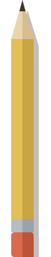

Features
Everything you need to keep a notebook, on one paper page per day.
Bold, italic and underline
The usual, from the toolbar or Ctrl+B, I and U.

Highlighter
Mark words like a real highlighter pen, in five colors or your own.

Tape titles
Add headings on strips of colored tape, and pick each tape's color.

Hand-drawn tables
Choose a size, and right-click to add rows or columns later.

Drawing
Sketch anywhere on the page with a pen, eraser and undo.
Images
Paste or drag pictures in. They're encrypted and taped to the page.